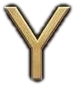
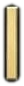

Kavar Mahsun Abdulkadir
Türkçe
English
کوردی
العربية
فارسی
Korek
+964 750 459 1112
Asiacell
+964 771 659 1112


Instagram
@kawar.maasom.abdulqader
›
f
Facebook
kawar.maasom.abdulqader
›
♪
TikTok
@kawar.abdulqader
›
@
kawar.abdulqader@uoz.edu.krd
@
kawarabdulqader1112@gmail.com
@
kawar.abdulqader@visitor.uoz.edu.krd
@
kawar.abdulqader@visitor.duhokcihan.edu.krd
GS
Google Scholar
Kawar Maasom Abdulqader
›
iD
ORCID
0009-0002-5956-142X
›
RG
ResearchGate
Kawar Abdulqader
›
UoZ
›
CU
›